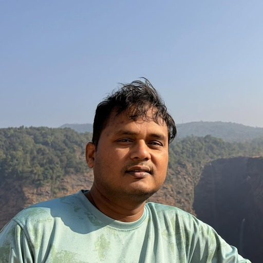

Principal Software Engineer · AI Infrastructure
Building agentic AI and Graph RAG systems that automate security review, code quality analysis, knowledge retrieval, and QA generation across enterprise engineering workflows.
Overview
Principal Software Engineer with 10+ years designing and scaling enterprise software. I currently lead AI infrastructure at Dell, building agentic and Graph RAG systems that automate security review, code quality analysis, knowledge retrieval, and QA generation across engineering workflows. Currently pursuing an MTech in Artificial Intelligence at BITS Pilani.
What I've built
Devin, MCP servers, and LangGraph wired directly into the PR pipeline to catch security issues before they escape to production.
Agentic AI + MLflow running on every check-in to speed up PR review and reduce manual review load.
LangChain + Neo4j orchestrated with Airflow, unifying Jira, Git, and Confluence search into one retrieval layer.
Neo4j Graph RAG, LangGraph, and MCP servers, cutting down manual QA scripting effort.
Repositories
Loading public repositories…
Toolkit
Career
Education
Certifications